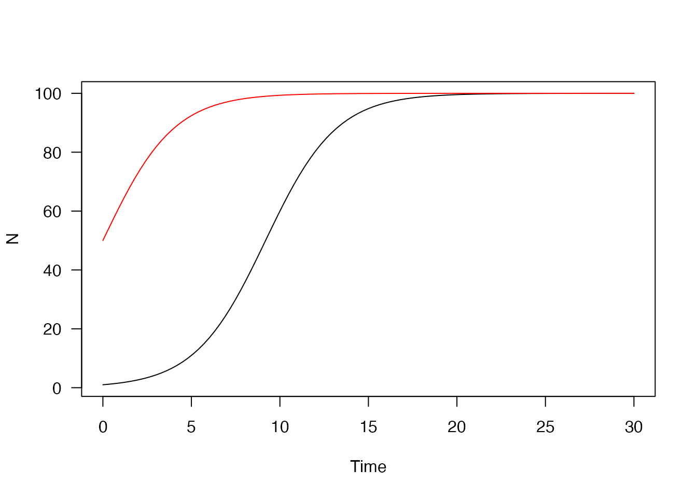
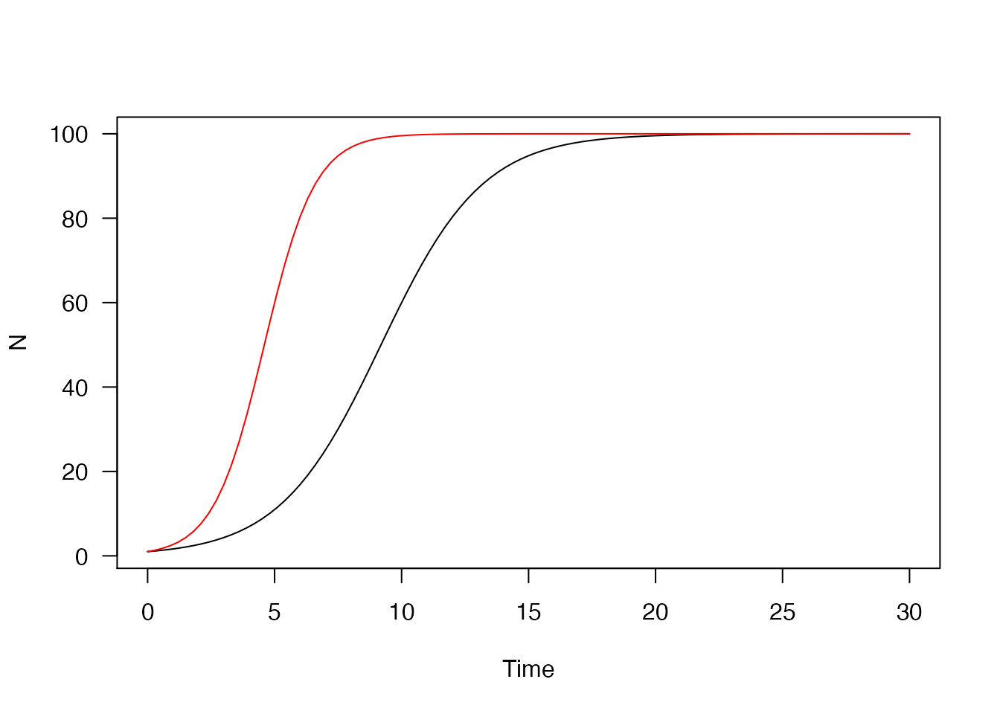
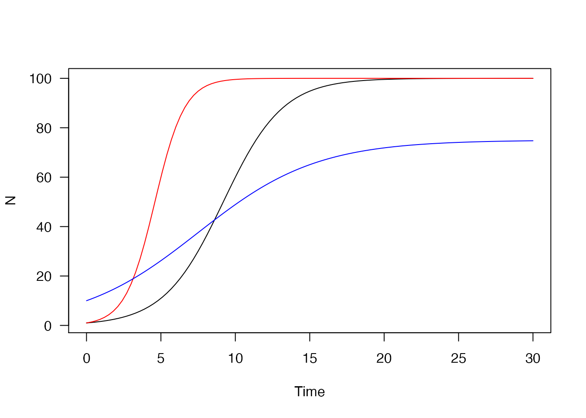
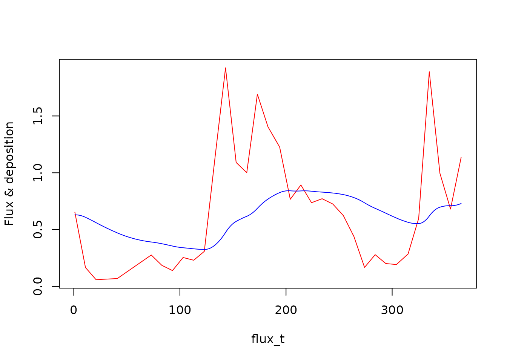
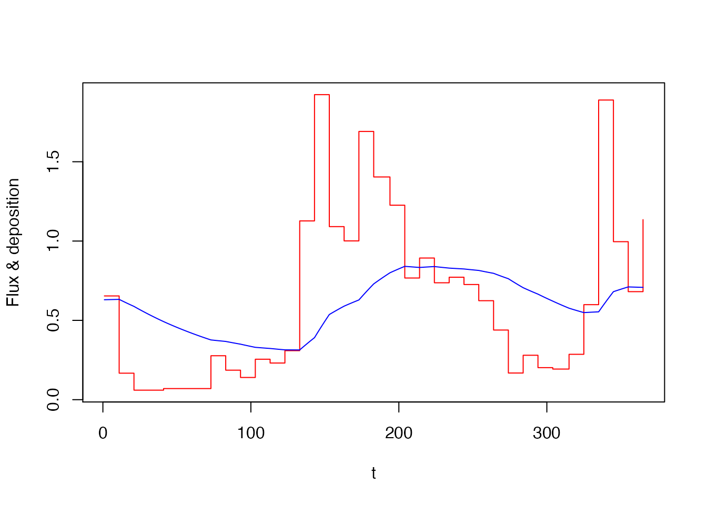

Single variable: Logistic growth
We’ll first start with a very simple model; logistic growth. We have one variable N which grows towards a carrying capacity K. The growth rate is r when N is very small (note that this equation can be easily solved analytically and it’s only included here for demonstration!)
path_logistic <- system.file("examples/logistic.R", package = "odin")
deriv(N) <- r * N * (1 - N / K)
initial(N) <- N0
N0 <- 1
K <- 100
r <- 0.5The time derivatives are indicated by deriv(N) <-; the right hand side of this is the differential equation. Initial conditions are always given (future versions may make them optional) and can be in terms of variables. Note that the definition of declaration is not important; the derivative calculation references parameters r and K which have not been defined and the initial conditions reference N0.
NOTE while this looks like R (and must parse as R) it is not actually R code. Copying and pasting this code into an R session would throw an error
To compile this as a standalone model (not suitable for inclusion in a package) use odin::odin;
generator <- odin::odin(path_logistic)## Loading required namespace: pkgbuildThis returns a function that will generate an instance of the model:
mod <- generator()
mod## <odin_model>
## Public:
## contents: function ()
## deriv: function (t, y)
## initial: function (t)
## initialize: function (..., user = list(...), use_dde = FALSE, unused_user_action = NULL)
## ir: function ()
## rhs: function (t, y)
## run: function (t, y = NULL, ..., use_names = TRUE)
## set_user: function (..., user = list(...), unused_user_action = NULL)
## transform_variables: function (y)
## Private:
## cfuns: list
## dll: logistic5cbfe8b4
## interpolate_t: NULL
## n_out: 0
## odin: environment
## output_order: NULL
## ptr: externalptr
## registration: function ()
## set_initial: function (t, y, use_dde)
## update_metadata: function ()
## use_dde: FALSE
## user: NULL
## variable_order: list
## ynames: t NThis is an ode_system object and can be used to run the system of differential equations, query the internal state, and so on. Most of the listed elements above do not need to be accessed ever (I would make them private but that incurs a very slight performance cost).
The initial conditions:
mod$init## NULLdN/dt evaluated at the time zero, with the initial conditions:
mod$deriv(0, mod$initial(0))## [1] 0.495or with arbitrary conditions:
mod$deriv(0, 50)## [1] 12.5To see the contents of all the variables, intermediates and parameters tracked by odin use contents():
mod$contents()## $initial_N
## [1] 1
##
## $K
## [1] 100
##
## $N0
## [1] 1
##
## $r
## [1] 0.5To run the model, provide a set of times:
tt <- seq(0, 30, length.out = 101)
y <- mod$run(tt)
plot(y, xlab = "Time", ylab = "N", las = 1, main = "")While initial conditions are computed, you may pass in arbitrary initial conditions;

Specifying parameters
The above is about the simplest possible useful model I could come up with. But it’s not that useful because all the parameters are hard coded into the model. Here’s a slightly tweaked version where the parameters may be specified at runtime:
generator <- odin::odin({
deriv(N) <- r * N * (1 - N / K)
initial(N) <- N0
N0 <- user(1)
K <- user(100)
r <- user()
})when used as user(1) (as for N and K) it means we allow a user parameter called N0 to be specified, but if omitted it has a default value of 1. When used as user() (as for r) it means that there is no default value and r must be provided.
Note this example takes the code of the model as its first argument. It can also be specified as text, but the form above should be nicer to write than text, especially in editors with support for things like autocompletion.
Because r is required, it is an error to initialise the model without any parameters:
generator()## Error in self$set_user(user = user, unused_user_action = unused_user_action): Expected a value for 'r'Providing r:
mod <- generator(r = 1)The model contains the set value of r
mod$contents()$r## [1] 1Running the model shows the effect of doubling the growth rate:

Once created a model can have the parameters re-set:
mod$set_user(r = 0.25, K = 75, N0 = 10)
y4 <- mod$run(tt)
plot(y, xlab = "Time", ylab = "N", las = 1, main = "")
lines(y3, col = "red")
lines(y4, col = "blue")
More than one variable: the Lorenz attractor
Once more than one variable is involved, there is a bit more book-keeping to take care of.
path_lorenz <- system.file("examples/lorenz.R", package = "odin")The Lorenz attractor is a set of coupled ODEs that displays chaotic behaviour. It was found by reducing a set of equations describing atmospheric convection in the 1960s. Mostly I just think it looks pretty.
deriv(y1) <- sigma * (y2 - y1)
deriv(y2) <- R * y1 - y2 - y1 * y3
deriv(y3) <- -b * y3 + y1 * y2
initial(y1) <- 10.0
initial(y2) <- 1.0
initial(y3) <- 1.0
## These are the classical parameters:
sigma <- 10
R <- 28
b <- 8 / 3The system is not chaotic with all parameters. The initial conditions are fairly arbitrary here as the system will settle into its characteristic shape from most points (though with completely different realisations).
Building the generator, and from that a system, is the same as the above:
generator <- odin::odin(path_lorenz)
mod <- generator()Because of the rapid changes that characterise this model, we’ll take a lot of samples.
tt <- seq(0, 100, length.out = 20000)
system.time(y <- mod$run(tt))## user system elapsed
## 0.008 0.001 0.009
pairs(y[, -1L], panel = lines, lwd = .2, col = "#00000055")Delay models
Models with lags and delays represent a challenge in solving and representing the system, see this wikipedia article for some of the issues. In the general case this gives a set of partial differential equations, which are much harder to solve generally than ordinary differential equations.
Like Berkeley Madonna, odin allows solving equations with lags, using the machinery available in deSolve. One can specify a lag in a state variable or an expression. The lag times can also be variables.
gen <- odin::odin({
ylag <- delay(y, tau)
initial(y) <- 0.5
deriv(y) <- 0.2 * ylag * 1 / (1 + ylag^10) - 0.1 * y
tau <- user(10)
output(ylag) <- ylag
})
dde <- gen()The first line here
ylag <- delay(y, tau)specifies the delay; it says that ylag should be equal to y from tau ago. Or; ylag(t) = y(t - tau).
delay expressions must be the only expressions on the rhs of an assignment. The first argument can be a single variable (like here) or it can be an expression.
Running the model will automatically use the deSolve::dede function.
t <- seq(0, 300, length.out = 301)
y1 <- dde$run(t)
plot(y1, ylab = "y", mfrow = c(1, 2), which = 1)
plot(y1[, -1L], xlab = "y", ylab = "ylag", mfrow = NULL, type = "l")Increasing the lag time creates much more complicated trajectories:
Arrays
Much of the above, especially the non-delay equations, can be expressed easily in deSolve. Even where the target functions are written in R they will tend to be fast enough to solve (unless strongly non-linear) so that the gains for writing out in C become small. odin was really designed for cases where the variables involved are arrays, used here to mean vectors, matrices or 3d matrices.
There are quite a few restrictions on how arrays are used, how indexing works, etc. Some of the current implementation requires creation of intermediate variables to make everything work (and naming things is one of the two hard problems in computer science. Hopefully in future versions some of these restrictions can be relaxed, so file issues if you find yourself writing boilerplate code that could be replaced by more intelligent generation.
Generalised Lotka-Volterra model
This example comes from the wikipedia page, in turn from Vano et al 2006. This model has four non-linear differential equations that have chaotic behaviour in fairly low dimension.
gen <- odin::odin({
deriv(y[]) <- r[i] * y[i] * (1 - sum(ay[i, ]))
initial(y[]) <- y0[i]
y0[] <- user()
r[] <- user()
a[, ] <- user()
ay[, ] <- a[i, j] * y[j]
dim(r) <- user()
n_spp <- length(r)
dim(y) <- n_spp
dim(y0) <- n_spp
dim(a) <- c(n_spp, n_spp)
dim(ay) <- c(n_spp, n_spp)
config(base) <- "lv4"
})These are the parameters from the wikipedia article, with y0 being close to the (unstable) equilibrium.
pars <- list(r = c(1.00, 0.72, 1.53, 1.27),
a = rbind(c(1.00, 1.09, 1.52, 0.00),
c(0.00, 1.00, 0.44, 1.36),
c(2.33, 0.00, 1.00, 0.47),
c(1.21, 0.51, 0.35, 1.00)),
y0 = c(0.3013, 0.4586, 0.1307, 0.3557))Note that we pass in r as a matrix, from which the number of species is determined. The competitive matrix a is passed through as a matrix – both dimensions must be the same as the length of r (you can’t just pass in a vector and hope it gets unpacked in the right order).
Interpolating functions
It may be useful to have functions that are driven by user data in your model. To allow this, odin allows interpolating functions of a few different types;
- step functions: constant piecewise functions, perhaps suitable for modelling shifts in regime, binary on/off switches, etc.
- linear interpolation: between a set of points use a linear interpolating function.
- cubic spline functions: what most people probably think of when thinking interpolating function; creates a smooth function that is twice differentiable (and smooth enough for most purposes). In contrast with the splines R uses with
spline(), these use the natural spline end conditions, and are equal tospline(t, y, method = "natural").
The interpolate takes as its first argument a vector of times. If you’re using constant or linear interpolating functions it is important that you include these times within times that the integrator passes through because otherwise the integrator may struggle needlessly with the discontinuities in the function or its derivatives (NOTE: future versions may handle this automatically, and this will not work at all with dde which does not yet support stopping at critical times).
The second argument of each interpolating function is a vector, matrix or array of values for the target function. The dimensionality (rank) of the structure must be one greater than the rhs. So if you want a classic 1d function, you’d write:
and z will be a scalar double, and t and y are both vectors with lengths that must match. The check for matching is done at runtime (when the model is initialised) so you can always just leave the dimensions as user(). Future versions may allow autogeneration of the boilerplate here, but for now you must specify the four lines required to initialise t and y.
Note that t cannot be used as the first argument because it’s a reserved variable!
If you want to interpolate a vector of y values over time, then you’d write:
z[] <- interpolate(tt, y)
dim(z) <- 4
tt[] <- user()
y[, ] <- user()
dim(tt) <- user()
dim(y) <- c(length(tt), length(z))In this case, z is a vector (here length 4), so y must be a matrix with length(t) rows and 4 columns. This does not do anything clever - the interpolation happens for each of the four variables independently.
If you want to drive the size of this off of y then specify:
in which case the size of z is determined from the number of columns of y.
By default, odin assumes you want do do cubic interpolation, but you can alter that with the third argument. Specify "constant" to indicate constant interpolation and "linear" to indicate linear interpolation.
All modes of interpolation use a fast lookup (bisection search that remembers where it started from on the last lookup) to try and make interpolation as fast as possible. Performance should be O(log(n)) in the number of points used to create the interpolating function, so the penalty for using many points in your interpolation should be low.
No care is taken about making sure that the integration stops at painful parts of your interpolating function. So, especially for the constant interpolation, be sure to include the switch points in the time vector (currently this will not work for dde which never stops at a specified point except for the start and end point). Future versions, especially once events are handled, may do this automatically.
As an example, here is the flux model from the deSolve compiledCode vignette (see vignette("compiledCode"), section 6).
The model here is:
dC/dt = flux(t) - k * C
flux_model <- odin::odin({
deriv(C) <- flux - kk * C
initial(C) <- C0
flux <- interpolate(flux_t, flux_y, "linear")
C0 <- user()
kk <- user()
output(deposition) <- kk * C
## Fair bit of boilerplate here that may be removed in future
## versions:
flux_t[] <- user()
flux_y[] <- user()
dim(flux_t) <- user()
dim(flux_y) <- user()
})Here we arrange for the components of the interpolating function to be passed through as user vectors, which is the only way of specifying these models at present. The interpolation type, here “linear”, is hard coded and cannot be changed at runtime.
flux_t <- c(1, 11, 21, 41, 73, 83, 93, 103, 113, 123, 133, 143, 153,
163, 173, 183, 194, 204, 214, 224, 234, 244, 254, 264,
274, 284, 294, 304, 315, 325, 335, 345, 355, 365)
flux_y <- c(0.654, 0.167, 0.06, 0.07, 0.277, 0.186, 0.14, 0.255, 0.231,
0.309, 1.127, 1.923, 1.091, 1.001, 1.691, 1.404, 1.226, 0.767,
0.893, 0.737, 0.772, 0.726, 0.624, 0.439, 0.168, 0.28, 0.202,
0.193, 0.286, 0.599, 1.889, 0.996, 0.681, 1.135)
plot(flux_t, flux_y, type = "l", ylab = "Flux", xlab = "Time")Following the deSolve vignette, the initial conditions are derived from the parameters and the flux over time:
Initialise the model:
mod <- flux_model(kk = k, C0 = C0, flux_t = flux_t, flux_y = flux_y)And run over one year:
t <- seq(1, 365)
y <- mod$run(t, tcrit = 365)The output in all its glory:
plot(flux_t, flux_y, type = "l", col = "red", ylab = "Flux & deposition")
lines(t, y[, 3], col = "blue")
Alternatively, we could have used constant or spline interpolation. This (at least at present) requires re-specifying and recompiling the entire model. So, for a constant model:
flux_model_c <- odin::odin({
deriv(C) <- flux - kk * C
initial(C) <- C0
flux <- interpolate(flux_t, flux_y, "constant")
C0 <- user()
kk <- user()
output(flux) <- flux
output(deposition) <- kk * C
## Fair bit of boilerplate here that may be removed in future
## versions:
flux_t[] <- user()
flux_y[] <- user()
dim(flux_t) <- user()
dim(flux_y) <- user()
})
mod_c <- flux_model_c(kk = k, C0 = C0, flux_t = flux_t, flux_y = flux_y)
y_c <- mod_c$run(t, tcrit = 365)
mod_c$output_order## NULL
plot(t, y_c[, 3], type = "s", col = "red", ylab = "Flux & deposition")
lines(t, y_c[, 4], col = "blue")
Or with cubic splines:
flux_model_s <- odin::odin({
deriv(C) <- flux - kk * C
initial(C) <- C0
flux <- interpolate(flux_t, flux_y, "spline")
C0 <- user()
kk <- user()
output(flux) <- flux
output(deposition) <- kk * C
## Fair bit of boilerplate here that may be removed in future
## versions:
flux_t[] <- user()
flux_y[] <- user()
dim(flux_t) <- user()
dim(flux_y) <- user()
})
mod_s <- flux_model_s(kk = k, C0 = C0, flux_t = flux_t, flux_y = flux_y)
y_s <- mod_s$run(t, tcrit = 365)
plot(t, y_s[, 3], type = "l", col = "red", ylab = "Flux & deposition")
lines(t, y_s[, 4], col = "blue")